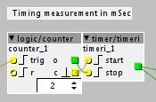

I figured it out. No it's time to experiment with subdivisions and filters+saturation in the feedback loop 
midi clock sync example delay.axp (21.7 KB)

I figured it out. No it's time to experiment with subdivisions and filters+saturation in the feedback loop
midi clock sync example delay.axp (21.7 KB)
Hi there,
I just sketched up something that might be related,it's pretty close to a tap-tempo-object.
what it does roughly,is start counting and then setting a saw-LFO to the corresponding speed.
taptempo_4.axp (4.5 KB)
Sound interesting but somehow I can't download it...
"The page you requested doesn't exist or is private."
Yes it works, thanks! This is great for manually tapping in tempo but I don't know if it's usable for a syncengine. A synceninge should rather have a continous input so that it can react to tempo changes, your object stops once you tap in a new tempo. Maybe it would be more usefull if the lfo wouldn't stop when tapping in a new tempo?
your right..
I think it makes sense to keep this more modular,to suit different needs.
so I cooked up some more stuff,most of all a 'k2f' object that converts integer
k-rate ticks to something like HZ,to be fed into a 'lfo/saw lin' object...
so here's the new patch,it contains a bunch of custom objects that I already uploaded to the
community library (you need 1.08 and up to run it)
I also did a signal-rate saw-lfo called 'phasor' to be used in conjunction with the 'k2f' - object.
taptempo_7.axp (5.1 KB)
This looks terrific, thank you very much vor sharing! Gonna try this for syncing delays later.
Just an Idea, I don't know if you're up for that but it would be awesome to have a midi clock object that could be set by tap tempo too. This would open up for a lot of great use cases, setting tempo with the length of the first loop you make or just generally speaking keeping several elements and other gear more coherent and setting the tempo in more intuitive way.
P.S. I'm implementing your patch now for Sidechain compression like pumping that is independant of tempo, so thanks again for opening it more up and making it available here
I patched this Tap delay, it works well...but isnt this too simple?
taptempo_7delay.axp (6.2 KB)
@SirSickSik
I thought the timer object output was in 'number of k-rate samples' rather than ms. Are you sure your maths is correct?
I translated from samplerate to ms with the 48000->"reciprocal module"
though as I found later on, this should have been the krate.
BUT!
I've written some dedicated modules to do the maths here and just uploaded these to the community library.
1- a clock to "basic timing" converter for delays and LFO's (though for this, my own multishape LFO should be used as this actually responds to actual 1v/hz input.
2. ratio module to quickly set divisions of base tempo (first multiply the float values, then use a mult64 behind it to scale it back to.
3. actual 1v/hz LFO. Has sine, triangle,saw, ramp and squarewave and I'm going add some more features later on, like a dedicated pwm for each waveform)
search in the library under "SirSickSik"
I've also just released three dynamics modules:
-limiter
-compressor
-transient designer
order of use for mastering purposes: compressor->transient designer->limiter
Ah, then I was just thrown off by the annotations.

Because that's definitely not right. 
I just found out I first had to subscribe to github. Thought I only needed to save the files to the community folder on my computer and that this would be automatically updated..
That sounds pretty promising but I'm not sure on how to use your timer.
Should I hook it's output up to a phasor that drives delay read or directly into the read output?

ps for the time-limiting you can use either one of the "min" modules... just depends on what kind of routing you are using and functionality you need..
hi sirsicksic, i just made a delay write pow, it has an outlet for pow/samplelength phi/delay write pow...
@SirSickSik
Thanks a lot, that looks more complicated than I thought indeed. I spend a whole night with the synced delay of @DrJustice. That one works fantastic too. But your module seems really useful for creating a global tempo reference in a patch.
In general your new modules are amazing! The analog distortion works wonderfull in the feedback path of a delay. Together with some filtering you can really get that analog delay sound!
Also pitchshifting is great in the feedback path. Finally we get Brian Enoesque shimmer delays
Sorry for maybe going slightly off topic here, but:
I have looked around on the axoloti-forum for a midi sync to LFO solution, but mostly, i get a bit confused:) Is there any working, simple solution?
Thanks:)
Hi, I'd like to make a delay with multi-tap rhythmic patterns. I think rbrt/control/timer could be useful for this, but I really don't know where to start, I need to write and store the pattern somehow and than trigger the recorded audio.
Any suggestions?

{kind=link}